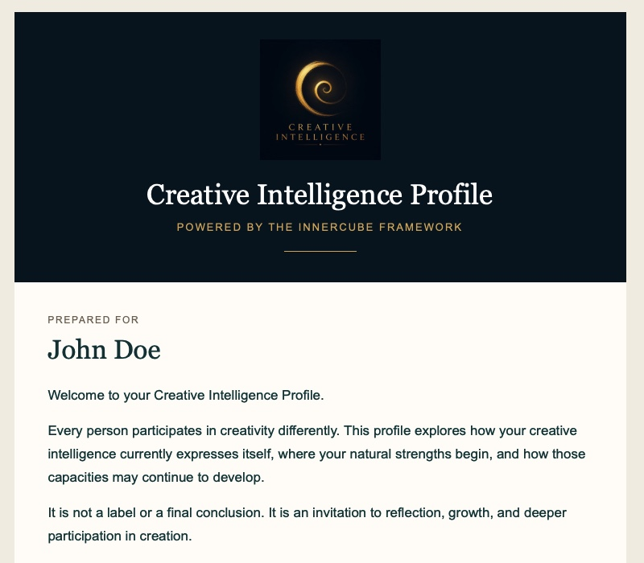

Help shape the future of AI-powered personalized learning. We are inviting ten organizations worldwide to help define a new generation of AI that begins by understanding the learner.
Every learner is different. Yet most educational technology still begins with the same assumption: personalization starts after content has been delivered.
We believe it should begin much earlier. It should begin by helping learners understand how they naturally think, create, solve problems, and collaborate.
The Creative Intelligence Platform is designed to provide AI with a richer understanding of each learner before personalized learning begins.
Artificial Intelligence is transforming education. The next step is not simply delivering knowledge more efficiently. It is helping every learner better understand themselves.
When learners understand how they naturally approach creativity, problem solving, reflection, and innovation, AI can provide guidance that is more meaningful, engaging, and ultimately more human.
We believe the future of education begins not with content, but with understanding the learner. AI becomes most powerful when it helps people discover their own potential before recommending what comes next.
We are seeking organizations that believe:
The Creative Intelligence Platform is operational and available for demonstration.
We are now inviting a limited number of organizations to collaborate during this early stage of development.
Only ten organizations will be invited to become Founding AI Learning Partners.
The Creative Intelligence Platform is no longer a concept. It is an operational AI-powered platform designed to help learners discover how they naturally think, create, collaborate, and solve problems before personalized learning begins.

Educator • Author • Founder
After more than thirteen years teaching students from diverse educational backgrounds, I became convinced that the future of education begins not with delivering knowledge, but with understanding the learner.
That conviction led me to develop the Creative Intelligence Platform—an AI-powered system designed to help learners discover how they naturally think, create, collaborate, and solve problems before personalized learning begins.
Today my goal is simple: to work with forward-thinking organizations to help define the next generation of AI-supported personalized learning.
To help one million learners discover how they naturally think, create, and solve problems—and to demonstrate that the future of AI begins with understanding the individual.
Schedule a ConversationInterested in exploring how Creative Intelligence could complement your AI learning platform? We'd love to start a conversation.